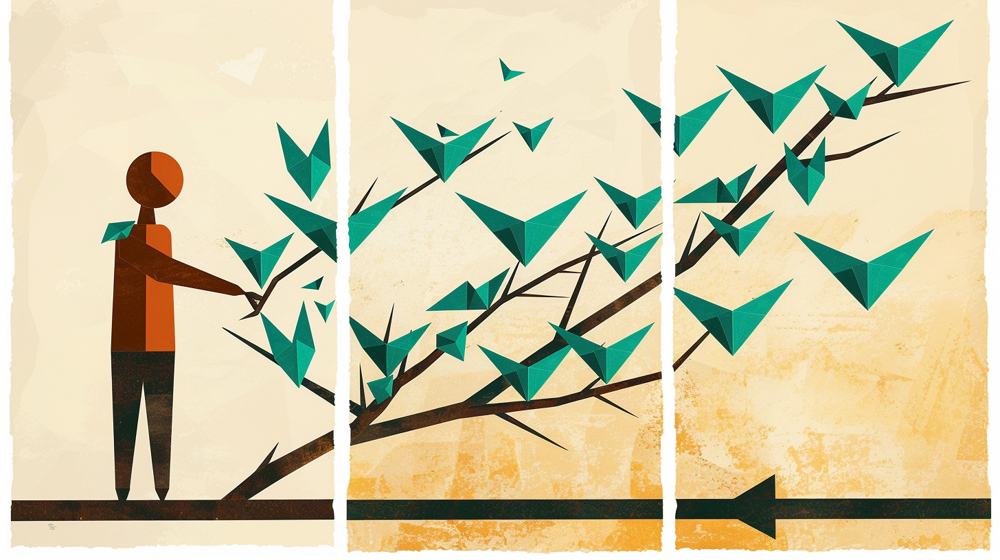
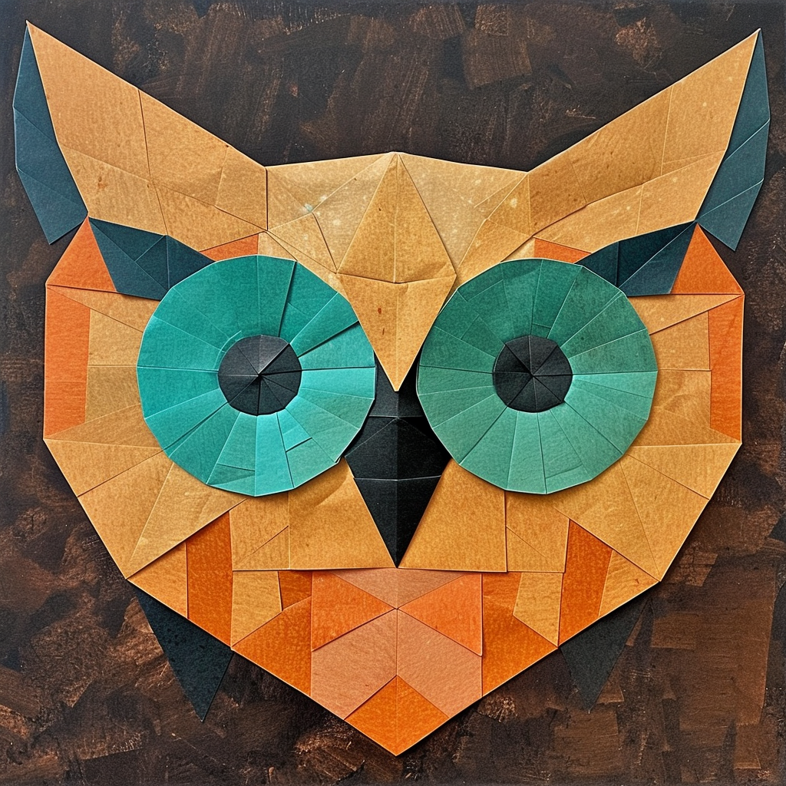
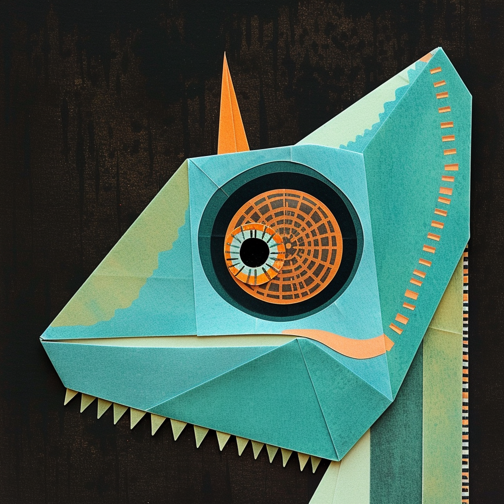

Fullsend is a project exploring what it would look like to let autonomous agents triage, implement, review, and ship code to production — securely and responsibly.
The industry has spent the last couple of years building co-pilots — sophisticated autocomplete that helps developers write code faster. Fullsend addresses the problem of the lights-out software factory, built for teams of humans who have real software to ship.
Most agentic AI projects focus on what agents can do. Fullsend focuses on what must be true before you hand over the keys.
No coordinator agent. Branch protection, CODEOWNERS, and status checks are the coordination layer. Trust derives from repository permissions, not agent identity.
CODEOWNERS files are always human-owned. Agents cannot modify the rules that constrain them. No agent trusts another based on who produced the output.
Problem-oriented documents that evolve independently, with ADRs spun off when decisions crystallize. Explore multiple options with trade-offs instead of prescribing single solutions.
Each problem area has its own document, evolving independently. Dive into the ones that matter to your organization.
Prompt injection, insider threats, agent drift, supply chain attacks.

When to auto-merge vs. escalate to humans. Binary per-repo autonomy.

Who controls the agents and their configuration?
How to capture, verify, and enforce what changes are wanted.
How agents review code, including security-focused sub-agents.

What agents exist, what authority do they have, how do they interact?
Fullsend is open source and evolving. Pick a problem area, read the existing document, poke holes, add your perspective. The future of autonomous engineering is being mapped in the open.